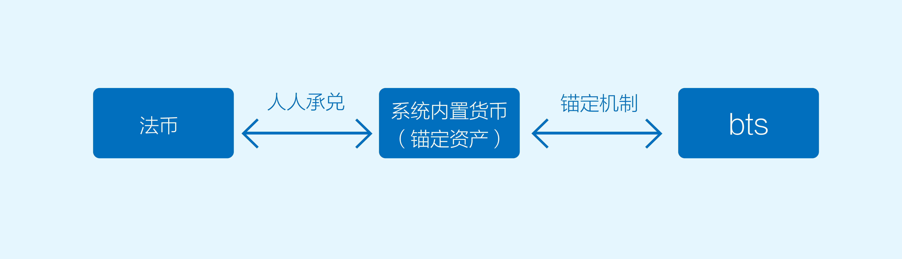

- 00 开篇词 帮你从0到1深入学习区块链技术.md.html
- 尾声篇 授人以鱼，不如授人以渔.md.html
- 新书首发《区块链第一课：深入浅出技术与应用》.md.html
- 第01讲 到底什么才是区块链？.md.html
- 第02讲 区块链到底是怎么运行的？.md.html
- 第03讲 浅说区块链共识机制.md.html
- 第04讲 区块链的应用类型.md.html
- 第05讲 如何理解数字货币？它与区块链又是什么样的关系？.md.html
- 第06讲 理解区块链之前，先上手体验一把数字货币.md.html
- 第07讲 区块链的常见误区.md.html
- 第08讲 最主流区块链项目有哪些？.md.html
- 第09讲 深入区块链技术（一）：技术基础.md.html
- 第10讲 深入区块链技术（二）：P2P网络.md.html
- 第11讲 深入区块链技术（三）：共识算法与分布式一致性算法.md.html
- 第12讲 深入区块链技术（四）：PoW共识.md.html
- 第13讲 深入区块链技术（五）：PoS共识机制.md.html
- 第14讲 深入区块链技术（六）：DPoS共识机制.md.html
- 第15讲 深入区块链技术（七）：哈希与加密算法.md.html
- 第16讲 深入区块链技术（八）： UTXO与普通账户模型.md.html
- 第17讲 去中心化与区块链交易性能.md.html
- 第18讲 智能合约与以太坊.md.html
- 第19讲 上手搭建一条自己的智能合约.md.html
- 第20讲 区块链项目详解：比特股BTS.md.html
- 第21讲 引人瞩目的区块链项目：EOS、IOTA、Cardano.md.html
- 第22讲 国内区块链项目技术一览.md.html
- 第23讲 联盟链和它的困境.md.html
- 第24讲 比特币专题（一）历史与货币.md.html
- 第25讲 比特币专题（二）：扩容之争、IFO与链上治理.md.html
- 第26讲 数字货币和数字资产.md.html
- 第27讲 弄懂数字货币交易平台（一）.md.html
- 第28讲 弄懂数字货币交易平台（二）.md.html
- 第29讲 互联网身份与区块链数字身份.md.html
- 第30讲 区块链即服务BaaS.md.html
- 第31讲 数字货币钱包服务.md.html
- 第32讲 区块链与供应链（一）.md.html
- 第33讲 区块链与供应链（二）.md.html
- 第34讲 从业区块链需要了解什么？.md.html
- 第35讲 搭建你的迷你区块链（设计篇 ）.md.html
- 第36讲 搭建你的迷你区块链（实践篇）.md.html
- 捐赠
第20讲 区块链项目详解：比特股BTS
前面两篇我们都聊了智能合约的话题，智能合约可以说是当下区块链最热的概念了，在多数人眼里，没有智能合约的区块链价值几乎就大打折扣。
那么说，实际上是不是这样呢，我们今天就来聊聊一个并没有开放式智能合约的区块链项目——比特股。
比特股发布于2014年，虽然没有引入智能合约的概念，但它提供了功能极为丰富的金融类工具，比特股上所有的金融合约都是事先在代码里写好的，所以说它的本身就是一个超级智能合约集合。
什么是比特股
比特股是一个公开透明的、7*24小时不间断运行的、基于区块链技术的去中心化交易平台。
它兼具了区块链的优点，也是第一个有关稳定数字货币的尝试，目前比特股提供了若干核心的金融服务，例如支付、撮合交易、资产存托等服务。
相较于传统的金融IT系统，它的服务器是由分散在世界各地的受托人（Delegated）维护的，即使其中一些人被攻击也不会导致整个系统的宕机。
比特股目前全网在线的服务器有27个，由于DPoS共识算法提供了较好的交易吞吐性能，理论上比特股的TPS可达10万，这也是比特股在技术上区别于其他区块链的最显著特征。比特股较好的TPS其实也是为了它的功能服务的。
在这里，我们能看出比特股平台的性质。
首先，比特股平台是一个交易平台，交易平台的显著特征是整个市场对时间敏感，大家都希望下单之后快速成交，所以高TPS是一个交易平台的基本需求。
其次，比特股是去中心化的交易平台。目前流行的中心化数字货币交易平台最大的问题是资金管理系统和撮合系统都由同一家控制的。
然而在传统的证券交易领域，证券登记和交易撮合是两个不同的主体，他们之间是协作关系，共同受到证券会的管辖。
所以，如果你的数字货币存在中心化交易平台，你的交易撮合也受它来控制，这里的交易撮合指的是一个交易双方通过挂出买单和卖单，系统完成撮合匹配直至最终成交的过程。
由于以上的这一切都是不透明的，这里面就有很多的不确定因素。
比如交易平台跑路风险、黑客攻击、资产莫名其妙丢失，或者撮合的过程中，交易对手方是谁，是否有内幕交易。这些情况都会带来较大的风险。
比特股的两个机制
那么比特股是如何设计中心化交易所来避免上述风险的呢？
比特股作为一个去中心化的交易所，它有两个机制可以避免上述的风险。
第一、资金出入是由承兑商来支持的，人人都可以成为承兑商，也就是人人承兑； 第二、锚定机制提供了稳定货币的出入金过程，锚定机制也保证了比特股的出入资金和交易撮合是分离的，避免了中心化交易平台的弊端。
这个过程可以简述为：法币<—>锚定资产（系统内置货币）<—>bts 的相互转换。从法币到系统内置货币用到了人人承兑机制，从系统内置货币到bts的转换用到了锚定机制。

这里的bts是比特股上流通的平台代币，它和比特币一样有类似的总量上限设定，大约在36亿左右，目前流通量26亿左右。我们接下来就来看看这两个机制。
1.人人承兑
人人承兑就是提供了从法币到系统内置货币的转换，比特股系统内置了多种货币，它锚定了多数法币。
例如bitCNY、bitUSD、bitEUR等等，这些系统内置货币是可以与CNY、USD、EUR按照1：1兑换的。而人人承兑货币其实就是提供了bitCNY和真正人民币之间的相互转换。
它的机制上有点类似那个比特币的场外交易。所谓场外交易，就是没有中心化撮合中介，交易双方自行议价成交。
例如，我想要买比特币，就可以找到一个专门的承兑商，直接把这个钱支付给交易商，然后承兑商再把比特币支付给我。这部分的内容，后面我们讲数字货币交易所的时候会和你详细讲解。
人人承兑在逻辑上差不多，它提供了一个CNY法币和bitCNY的兑换手段，实际上就是让法币和比特股系统内置货币的交换能够进行，而且是去信任的进行。
所以从资金托管的角度来看，比特股与中心化交易所很大的区别，比如你在一个交易所里充值，你只能信任这个交易所在保管你的钱，在你要提现的时候，你只能信任交易所愿意让你提出。
但是人人承兑的就不一样了，人人承兑是你从A承兑商获取bitCNY，你可以找B承兑商再换成人民币，不需要只在同一个地方兑换。
因此一个人此时有充值的需求，过一段时间可能就有提现的需求，所以实际上每个人都可以成为承兑商，我可以是买家也可以是卖家，交易角色的转换可以让市场更灵活。当然市场上也有专门提供充值和提现服务的 “承兑商”，这些承兑商收取手续费来盈利。
但是，不是所有的中心化风险都可以通过技术解决，人与人的信任问题没有一劳永逸的解决办法，即使你们当面交易也有可能遇到对方欺诈的行为。
我们只能说，CNY法币与bitCNY锚定之后的充值和提现相对更安全，人人承兑提供了一种有效的机制，缩短了出金入金的周期，提升了安全性，如果资金在比特股系统之内，整个使用期间也没有人能威胁到你的资产。
2.锚定机制
锚定机制是一种去中心化的抵押机制。我们刚才提到了比特股系统内置了多种货币，它锚定了多数法币，例如bitCNY、bitUSD、bitEUR等等，这些系统内置货币是可以与CNY、USD、EUR按照1：1兑换的。
系统内置货币的发行商是系统自身，发行给抵押了bts的用户，发行的数量是由抵押的代币数量决定的。你用bts抵押，然后换取bitCNY。
换句话说，任何持有bts的人可以用它来抵押生产系统的内置货币，例如bitCNY，它的抵押规则要求两倍价值的bts进行抵押，由于有2倍价值的bts作为保障，所以定义1 bitCNY = 1元人民币的风险较低。
比特股系统本身提供bts与bitCNY交易对，例如现在bts价格是0.5元人民币，我就能用4个价值2元的bts抵押产生1枚bitCNY，也就是2倍价格抵押。
这种抵押担保机制保障了bitCNY的价值，并且从技术层面来讲，比特股的共识机制保证了恶意修改bitCNY的数量的造假行为是不可行的。
如果bts价格下跌，系统就会自动把我抵押产生的bts卖掉，因为抵押了2倍价值的bts，所以如果没有暴跌50%以上，系统都可以在交易市场上卖掉我抵押产生的bts，并在市场上获得bitCNY。
如果暴跌50%以上，系统会以一成的价格（强制平仓）卖出抵押的bts，直至卖够抵押产生的bitCNY。
从操作层面来看，支付bitCNY实际上消耗的还是bts，但需要消耗多少，就以实时价格买入多少bts。
买入操作是瞬间完成的，在比特股上有专门的代币资金池来提供，实时价格由系统为之决定的，所以使用者不用承担任何比特股代币价格波动带来的风险。
至此，稳定的bitCNY货币就产生了，它兼具了区块链的优点，且是一种稳定货币。
除了抵押以外，还有强制平仓、强制清算这种机制来保证价值和实际所锚定的货币等价。内容比较深，留给你自己挖掘。
比特股的技术概览
比特股的核心代码是由Cryptonomex公司开源的石墨烯（Graphene）框架演变而来，它的主体代码是C++编写的，里面使用了大量的boost库组件，如果你对石墨烯技术感兴趣，并且熟悉C++，可以仔细研究一番。
除了比特股核心，这里还有一套Javascript编写的UI产品，叫做Bitshares-UI，Bitshares-UI其实是一个轻量级的基于浏览器的钱包：比特股钱包，这个钱包将用户密钥存储在本地浏览器上，并且密钥是通过用户密码加密并储存在浏览器数据库。
发送交易时，先本地对交易进行签名，再传输到代理服务器上，由服务器广播至比特股全网，这个服务器你也可以自己搭建。
比特股所使用的共识算法我们已经讲过，是DPoS，所以比特股也有见证人节点，目前有101个见证人节点，从101个节点中，社区又选出了11位代表，我们叫做理事会。理事会接受社区投票然后行使比特股上的治理权。
比特股使用的也是ECC椭圆曲线非对称加密算法，值得一提的是，比特股并没有类似比特币地址的概念，在比特股上取而代之的是可读的账号系统，这些账号与私钥一一绑定，可读账号就是比特股系统中的地址。
比如我的账号是“chenhao”，那么在比特股上，你支付给我bitCNY的时候，接收方一栏直接填“chenhao”即可。
总结
今天我向你详细介绍了比特股系统，比特股也是一场伟大的实验，它打破了区块链应用数字货币的局限性，让区块链技术具有丰富的金融特性。
比特股技术上的优势多体现在DPoS算法上，所以本篇我重点介绍了比特股的产品特性。
比特股社区也是区块链界的一股清流，因为持有比特股往往需要学习大量金融知识。
投资者想要投资比特股，光是弄清楚锚定机制足以让投机者就需要花费大量时间，所以一旦被比特股套牢，似乎只能学习比特股进行自我提升，这也让比特股社区的平均金融知识储备高于其他区块链项目。
比特股上的“强制平仓”和“强制清算” 是什么意思呢？你可以跟我留言，我们一起讨论，感谢你的收听，我们下期再见。
附录：
© 2019 - 2023 Liangliang Lee. Powered by gin and hexo-theme-book.